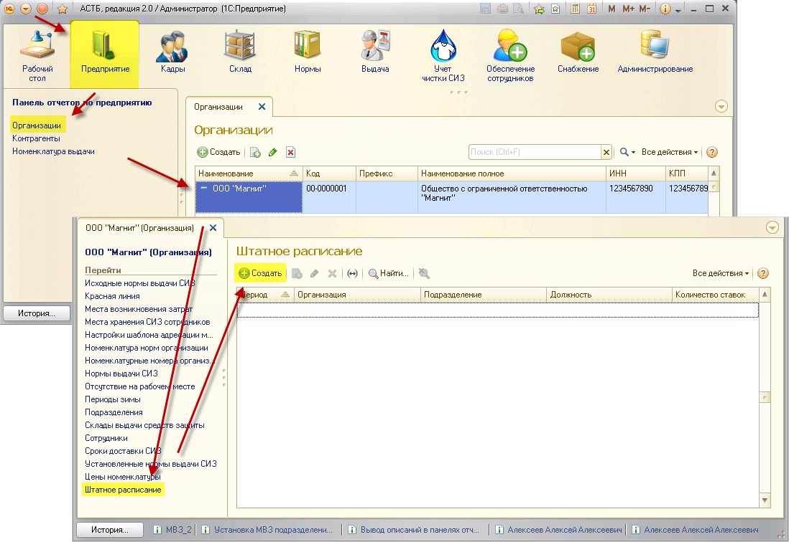

Данная глава дает подробную инструкцию по вводу и фиксированию информации о штатном расписании организации, в котором можно указать количество ставок той или иной должности по каждому подразделению в организации. Благодаря этой информации, в дальнейшем, можно будет контролировать минимальные запасы по остаткам СИЗ и верно формировать заказы на поставку СИЗ. Без ввода штатного расписания будет невозможно создавать приказы по приему сотрудников на работу.
Для ввода штатного расписания необходимо зайти в раздел «Предприятие», «Организации», далее двойным нажатием выбрать необходимую фирму. В открывшемся окне выбрать пункт «Штатное расписание» и нажать кнопку «Создать».

В появившемся окне заполните подразделение, должность и количество ставок, существующих в организации для данной должности. Используя кнопку <...>